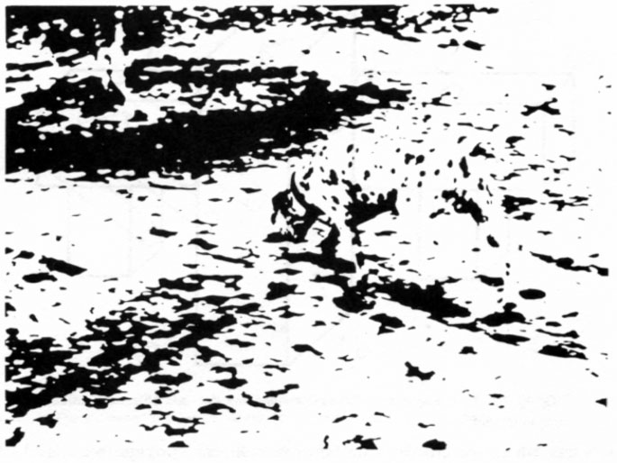

Diana Deutsch's 'Mysterious Melody Illusion'
Click the buttons at the bottom to play a web audio version of the mysterious melody illusion.The following text and images have been taken from Diana Deutsch's Website':
The ‘Mysterious Melody’ illusion was discovered and first published by Deutsch in Perception and Psychophysics, 19721. This musical brain teaser shows how our knowledge of a piece of music can have a profound influence on how we hear it. Suppose you play a well-known tune such that all the note names (C, D, E, and so on) are correct, but the tones are distributed haphazardly among three different octaves. If people are given no clues as to what the tune might be, they find it very difficult to identify. But once they know what to listen for, the melody becomes easy to follow.
The ‘Mysterious Melody’ illusion provides a striking example of ‘top-down processing’, or the use of previously acquired knowledge, in sound perception. Other examples occur in vision. For example, when you first view the picture below, all you see is a jumble of blobs. But when you are told that it is a spotted Dalmation dog against a dappled background, you begin to see its ears, nose, tail, and so on, until the entire outline of the dog emerges. Our stored knowledge of thousands of dogs that we have seen in the past enables us to reconstruct this image correctly. Analogously, once we are told the name of this ‘Mysterious Melody’ we can draw on our knowledge of what it normally sounds like, so that we can recognize it.
Listen to the following example of a well-known tune, and try to guess its name.
This version uses a different well known tune.